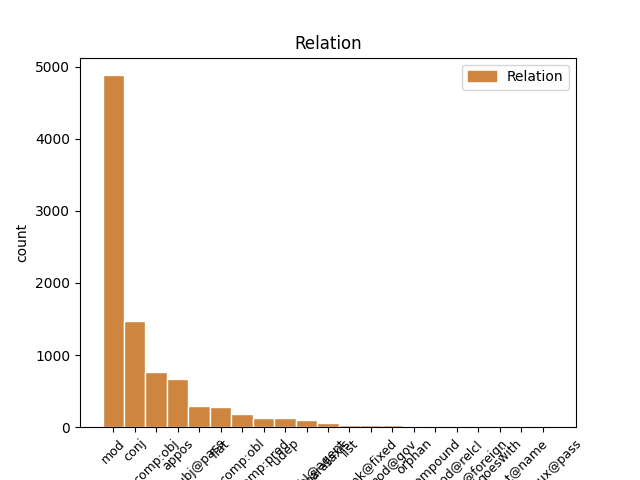
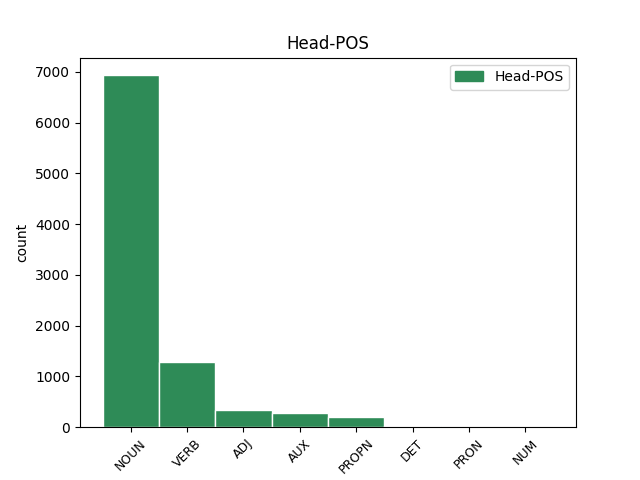
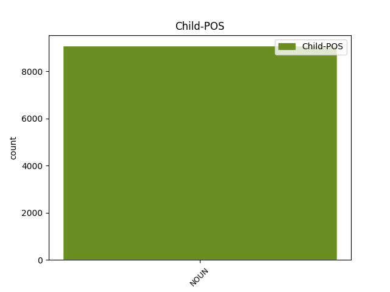

Distribution of features within this leaf



Agreement Rules sorted by frequency.
- When the dependent token is the modifer(mod) of the head token, and the head token is NOUN and the dependent token is NOUN.
1 Контролируемый _ _ _ _ 0 _ _ _
2 интерфейсом интерфейс NOUN NN Animacy=Inan|Case=Ins|Gender=Masc|Number=Sing 0 _ _ _
3 захвата захват NOUN NN Animacy=Inan|Case=Gen|Gender=Masc|Number=Sing 2 mod _ _
4 движения _ _ _ _ 0 _ _ _
5 , _ _ _ _ 0 _ _ _
6 Geminoid _ _ _ _ 0 _ _ _
7 HI _ _ _ _ 0 _ _ _
8 - _ _ _ _ 0 _ _ _
9 1 _ _ _ _ 0 _ _ _
10 Может _ _ _ _ 0 _ _ _
11 имитировать _ _ _ _ 0 _ _ _
12 тело _ _ _ _ 0 _ _ _
13 Исигуро _ _ _ _ 0 _ _ _
14 и _ _ _ _ 0 _ _ _
15 мимикой _ _ _ _ 0 _ _ _
16 , _ _ _ _ 0 _ _ _
17 и _ _ _ _ 0 _ _ _
18 он _ _ _ _ 0 _ _ _
19 может _ _ _ _ 0 _ _ _
20 воспроизводить _ _ _ _ 0 _ _ _
21 голос _ _ _ _ 0 _ _ _
22 синхронно _ _ _ _ 0 _ _ _
23 с _ _ _ _ 0 _ _ _
24 его _ _ _ _ 0 _ _ _
25 движениями _ _ _ _ 0 _ _ _
26 и _ _ _ _ 0 _ _ _
27 осанку _ _ _ _ 0 _ _ _
28 . _ _ _ _ 0 _ _ _
1 Основная _ _ _ _ 0 _ _ _
2 аудитория _ _ _ _ 0 _ _ _
3 геосоциального _ _ _ _ 0 _ _ _
4 сервиса _ _ _ _ 0 _ _ _
5 AlterGeo _ _ _ _ 0 _ _ _
6 -- _ _ _ _ 0 _ _ _
7 молодые _ _ _ _ 0 _ _ _
8 общительные _ _ _ _ 0 _ _ _
9 люди _ _ _ _ 0 _ _ _
10 , _ _ _ _ 0 _ _ _
11 которые _ _ _ _ 0 _ _ _
12 активно _ _ _ _ 0 _ _ _
13 пользуются _ _ _ _ 0 _ _ _
14 Интернетом _ _ _ _ 0 _ _ _
15 и _ _ _ _ 0 _ _ _
16 социальными _ _ _ _ 0 _ _ _
17 сетями _ _ _ _ 0 _ _ _
18 , _ _ _ _ 0 _ _ _
19 являются _ _ _ _ 0 _ _ _
20 лидерами _ _ _ _ 0 _ _ _
21 мнений _ _ _ _ 0 _ _ _
22 , _ _ _ _ 0 _ _ _
23 с _ _ _ _ 0 _ _ _
24 уровнем _ _ _ _ 0 _ _ _
25 дохода _ _ _ _ 0 _ _ _
26 выше _ _ _ _ 0 _ _ _
27 среднего _ _ _ _ 0 _ _ _
28 ( _ _ _ _ 0 _ _ _
29 имеют _ _ _ _ 0 _ _ _
30 современный _ _ _ _ 0 _ _ _
31 мобильный _ _ _ _ 0 _ _ _
32 телефон телефон NOUN NN Animacy=Inan|Case=Acc|Gender=Masc|Number=Sing 0 _ _ _
33 , _ _ _ _ 0 _ _ _
34 ноутбук ноутбук NOUN NN Animacy=Inan|Case=Acc|Gender=Masc|Number=Sing 32 conj _ SpaceAfter=No
35 ) _ _ _ _ 0 _ _ _
36 , _ _ _ _ 0 _ _ _
37 живут _ _ _ _ 0 _ _ _
38 в _ _ _ _ 0 _ _ _
39 мегаполисах _ _ _ _ 0 _ _ _
40 , _ _ _ _ 0 _ _ _
41 любят _ _ _ _ 0 _ _ _
42 встречаться _ _ _ _ 0 _ _ _
43 с _ _ _ _ 0 _ _ _
44 друзьями _ _ _ _ 0 _ _ _
45 и _ _ _ _ 0 _ _ _
46 посещать _ _ _ _ 0 _ _ _
47 новые _ _ _ _ 0 _ _ _
48 интересные _ _ _ _ 0 _ _ _
49 места _ _ _ _ 0 _ _ _
50 . _ _ _ _ 0 _ _ _
1 Эксергия _ _ _ _ 0 _ _ _
2 ( _ _ _ _ 0 _ _ _
3 эксэргия _ _ _ _ 0 _ _ _
4 ; _ _ _ _ 0 _ _ _
5 от _ _ _ _ 0 _ _ _
6 , _ _ _ _ 0 _ _ _
7 -- _ _ _ _ 0 _ _ _
8 приставка _ _ _ _ 0 _ _ _
9 , _ _ _ _ 0 _ _ _
10 означающая означать VERB VBNL Animacy=Inan|Aspect=Imp|Case=Nom|Gender=Fem|Number=Sing|Tense=Pres|VerbForm=Part|Voice=Act 0 _ _ _
11 высокую _ _ _ _ 0 _ _ _
12 степень степень NOUN NN Animacy=Inan|Case=Acc|Gender=Fem|Number=Sing 10 comp:obj _ SpaceAfter=No
13 , _ _ _ _ 0 _ _ _
14 и _ _ _ _ 0 _ _ _
15 -- _ _ _ _ 0 _ _ _
16 работа _ _ _ _ 0 _ _ _
17 ) _ _ _ _ 0 _ _ _
18 -- _ _ _ _ 0 _ _ _
19 часть _ _ _ _ 0 _ _ _
20 энергии _ _ _ _ 0 _ _ _
21 , _ _ _ _ 0 _ _ _
22 равная _ _ _ _ 0 _ _ _
23 максимальной _ _ _ _ 0 _ _ _
24 полезной _ _ _ _ 0 _ _ _
25 работе _ _ _ _ 0 _ _ _
26 , _ _ _ _ 0 _ _ _
27 которую _ _ _ _ 0 _ _ _
28 может _ _ _ _ 0 _ _ _
29 совершить _ _ _ _ 0 _ _ _
30 термодинамическая _ _ _ _ 0 _ _ _
31 система _ _ _ _ 0 _ _ _
32 при _ _ _ _ 0 _ _ _
33 переходе _ _ _ _ 0 _ _ _
34 из _ _ _ _ 0 _ _ _
35 данного _ _ _ _ 0 _ _ _
36 состояния _ _ _ _ 0 _ _ _
37 в _ _ _ _ 0 _ _ _
38 состояние _ _ _ _ 0 _ _ _
39 равновесия _ _ _ _ 0 _ _ _
40 с _ _ _ _ 0 _ _ _
41 окружающей _ _ _ _ 0 _ _ _
42 средой _ _ _ _ 0 _ _ _
43 . _ _ _ _ 0 _ _ _
1 Кот кот NOUN NN Animacy=Anim|Case=Nom|Gender=Masc|Number=Sing 0 _ _ _
2 Икс икс NOUN NN Animacy=Inan|Case=Nom|Gender=Masc|Number=Sing 1 appos _ _
3 является _ _ _ _ 0 _ _ _
4 сторонником _ _ _ _ 0 _ _ _
5 автоматизации _ _ _ _ 0 _ _ _
6 труда _ _ _ _ 0 _ _ _
7 и _ _ _ _ 0 _ _ _
8 поклонником _ _ _ _ 0 _ _ _
9 загородного _ _ _ _ 0 _ _ _
10 отдыха _ _ _ _ 0 _ _ _
11 , _ _ _ _ 0 _ _ _
12 рыбалки _ _ _ _ 0 _ _ _
13 и _ _ _ _ 0 _ _ _
14 сбора _ _ _ _ 0 _ _ _
15 грибов _ _ _ _ 0 _ _ _
16 . _ _ _ _ 0 _ _ _
1 И _ _ _ _ 0 _ _ _
2 потому _ _ _ _ 0 _ _ _
3 , _ _ _ _ 0 _ _ _
4 когда _ _ _ _ 0 _ _ _
5 жена _ _ _ _ 0 _ _ _
6 неожиданно _ _ _ _ 0 _ _ _
7 умерла _ _ _ _ 0 _ _ _
8 от _ _ _ _ 0 _ _ _
9 осложнившегося _ _ _ _ 0 _ _ _
10 пневмонией _ _ _ _ 0 _ _ _
11 гриппа _ _ _ _ 0 _ _ _
12 , _ _ _ _ 0 _ _ _
13 ученый ученый NOUN NN Animacy=Anim|Case=Nom|Gender=Masc|Number=Sing 17 subj@pass _ SpaceAfter=No
14 , _ _ _ _ 0 _ _ _
15 казалось _ _ _ _ 0 _ _ _
16 , _ _ _ _ 0 _ _ _
17 был быть AUX VBC Aspect=Imp|Gender=Masc|Mood=Ind|Number=Sing|Tense=Past|VerbForm=Fin 0 _ _ _
18 сражен _ _ _ _ 0 _ _ _
19 навсегда _ _ _ _ 0 _ _ _
20 . _ _ _ _ 0 _ _ _
1 В _ _ _ _ 0 _ _ _
2 те _ _ _ _ 0 _ _ _
3 годы _ _ _ _ 0 _ _ _
4 в _ _ _ _ 0 _ _ _
5 селе _ _ _ _ 0 _ _ _
6 был _ _ _ _ 0 _ _ _
7 птичник _ _ _ _ 0 _ _ _
8 и _ _ _ _ 0 _ _ _
9 разбит разбить VERB VBNH Animacy=Inan|Aspect=Perf|Case=Nom|Gender=Masc|Number=Sing|Tense=Past|Variant=Short|VerbForm=Part|Voice=Pass 0 _ _ _
10 колхозный _ _ _ _ 0 _ _ _
11 сад сад NOUN NN Animacy=Inan|Case=Nom|Gender=Masc|Number=Sing 9 subj@pass _ SpaceAfter=No
12 . _ _ _ _ 0 _ _ _
1 Протагонист _ _ _ _ 0 _ _ _
2 игры _ _ _ _ 0 _ _ _
3 -- _ _ _ _ 0 _ _ _
4 Эш Эш PROPN NNP Animacy=Anim|Case=Nom|Gender=Masc|Number=Sing 0 _ _ _
5 , _ _ _ _ 0 _ _ _
6 персонаж персонаж NOUN NN Animacy=Anim|Case=Nom|Gender=Masc|Number=Sing 4 appos _ _
7 трилогии _ _ _ _ 0 _ _ _
8 Зловещие _ _ _ _ 0 _ _ _
9 мертвецы _ _ _ _ 0 _ _ _
10 . _ _ _ _ 0 _ _ _
1 В _ _ _ _ 0 _ _ _
2 дальнейшем _ _ _ _ 0 _ _ _
3 броненосец _ _ _ _ 0 _ _ _
4 своей _ _ _ _ 0 _ _ _
5 артиллерией _ _ _ _ 0 _ _ _
6 наносил наносить VERB VBC Aspect=Imp|Gender=Masc|Mood=Ind|Number=Sing|Tense=Past|VerbForm=Fin|Voice=Act 0 _ _ _
7 урон _ _ _ _ 0 _ _ _
8 врагу враг NOUN NN Animacy=Anim|Case=Dat|Gender=Masc|Number=Sing 6 comp:obl _ SpaceAfter=No
9 , _ _ _ _ 0 _ _ _
10 участвовал _ _ _ _ 0 _ _ _
11 в _ _ _ _ 0 _ _ _
12 отражении _ _ _ _ 0 _ _ _
13 ночных _ _ _ _ 0 _ _ _
14 атак _ _ _ _ 0 _ _ _
15 японских _ _ _ _ 0 _ _ _
16 миноносцев _ _ _ _ 0 _ _ _
17 . _ _ _ _ 0 _ _ _
1 На _ _ _ _ 0 _ _ _
2 основании _ _ _ _ 0 _ _ _
3 упоминания _ _ _ _ 0 _ _ _
4 Харатона _ _ _ _ 0 _ _ _
5 как _ _ _ _ 0 _ _ _
6 `` _ _ _ _ 0 _ _ _
7 первого _ _ _ _ 0 _ _ _
8 из _ _ _ _ 0 _ _ _
9 риксов _ _ _ _ 0 _ _ _
10 '' _ _ _ _ 0 _ _ _
11 делается _ _ _ _ 0 _ _ _
12 вывод _ _ _ _ 0 _ _ _
13 о _ _ _ _ 0 _ _ _
14 том _ _ _ _ 0 _ _ _
15 , _ _ _ _ 0 _ _ _
16 что _ _ _ _ 0 _ _ _
17 он _ _ _ _ 0 _ _ _
18 был быть AUX VBC Aspect=Imp|Gender=Masc|Mood=Ind|Number=Sing|Tense=Past|VerbForm=Fin 0 _ _ _
19 правителем правитель NOUN NN Animacy=Anim|Case=Ins|Gender=Masc|Number=Sing 18 comp:pred _ _
20 большей _ _ _ _ 0 _ _ _
21 части _ _ _ _ 0 _ _ _
22 Гуннской _ _ _ _ 0 _ _ _
23 державы _ _ _ _ 0 _ _ _
24 , _ _ _ _ 0 _ _ _
25 возможно _ _ _ _ 0 _ _ _
26 , _ _ _ _ 0 _ _ _
27 первым _ _ _ _ 0 _ _ _
28 царём _ _ _ _ 0 _ _ _
29 , _ _ _ _ 0 _ _ _
30 объединившим _ _ _ _ 0 _ _ _
31 в _ _ _ _ 0 _ _ _
32 410-е _ _ _ _ 0 _ _ _
33 годы _ _ _ _ 0 _ _ _
34 под _ _ _ _ 0 _ _ _
35 своей _ _ _ _ 0 _ _ _
36 властью _ _ _ _ 0 _ _ _
37 все _ _ _ _ 0 _ _ _
38 племена _ _ _ _ 0 _ _ _
39 гуннов _ _ _ _ 0 _ _ _
40 , _ _ _ _ 0 _ _ _
41 проживавшие _ _ _ _ 0 _ _ _
42 к _ _ _ _ 0 _ _ _
43 северу _ _ _ _ 0 _ _ _
44 от _ _ _ _ 0 _ _ _
45 Дуная _ _ _ _ 0 _ _ _
46 . _ _ _ _ 0 _ _ _
1 Завершив _ _ _ _ 0 _ _ _
2 карьеру _ _ _ _ 0 _ _ _
3 футболиста _ _ _ _ 0 _ _ _
4 , _ _ _ _ 0 _ _ _
5 Сормани _ _ _ _ 0 _ _ _
6 работал работать VERB VBC Aspect=Imp|Gender=Masc|Mood=Ind|Number=Sing|Tense=Past|VerbForm=Fin|Voice=Act 0 _ _ _
7 тренером тренер NOUN NN Animacy=Anim|Case=Ins|Gender=Masc|Number=Sing 6 comp:pred _ SpaceAfter=No
8 . _ _ _ _ 0 _ _ _
1 Контролируемый контролировать VERB VBNL Animacy=Inan|Aspect=Imp|Case=Nom|Gender=Masc|Number=Sing|Tense=Pres|VerbForm=Part|Voice=Pass 0 _ _ _
2 интерфейсом интерфейс NOUN NN Animacy=Inan|Case=Ins|Gender=Masc|Number=Sing 1 comp:obl@agent _ _
3 захвата _ _ _ _ 0 _ _ _
4 движения _ _ _ _ 0 _ _ _
5 , _ _ _ _ 0 _ _ _
6 Geminoid _ _ _ _ 0 _ _ _
7 HI _ _ _ _ 0 _ _ _
8 - _ _ _ _ 0 _ _ _
9 1 _ _ _ _ 0 _ _ _
10 Может _ _ _ _ 0 _ _ _
11 имитировать _ _ _ _ 0 _ _ _
12 тело _ _ _ _ 0 _ _ _
13 Исигуро _ _ _ _ 0 _ _ _
14 и _ _ _ _ 0 _ _ _
15 мимикой _ _ _ _ 0 _ _ _
16 , _ _ _ _ 0 _ _ _
17 и _ _ _ _ 0 _ _ _
18 он _ _ _ _ 0 _ _ _
19 может _ _ _ _ 0 _ _ _
20 воспроизводить _ _ _ _ 0 _ _ _
21 голос _ _ _ _ 0 _ _ _
22 синхронно _ _ _ _ 0 _ _ _
23 с _ _ _ _ 0 _ _ _
24 его _ _ _ _ 0 _ _ _
25 движениями _ _ _ _ 0 _ _ _
26 и _ _ _ _ 0 _ _ _
27 осанку _ _ _ _ 0 _ _ _
28 . _ _ _ _ 0 _ _ _
1 Окончив _ _ _ _ 0 _ _ _
2 Московский _ _ _ _ 0 _ _ _
3 государственный _ _ _ _ 0 _ _ _
4 строительный _ _ _ _ 0 _ _ _
5 университет _ _ _ _ 0 _ _ _
6 по _ _ _ _ 0 _ _ _
7 специальности _ _ _ _ 0 _ _ _
8 `` _ _ _ _ 0 _ _ _
9 инженер _ _ _ _ 0 _ _ _
10 '' _ _ _ _ 0 _ _ _
11 , _ _ _ _ 0 _ _ _
12 Легостаев _ _ _ _ 0 _ _ _
13 прослужил прослужить VERB VBC Aspect=Perf|Gender=Masc|Mood=Ind|Number=Sing|Tense=Past|VerbForm=Fin|Voice=Act 0 _ _ _
14 год год NOUN NN Animacy=Inan|Case=Acc|Gender=Masc|Number=Sing 13 udep _ _
15 в _ _ _ _ 0 _ _ _
16 армии _ _ _ _ 0 _ _ _
17 . _ _ _ _ 0 _ _ _
1 Данный _ _ _ _ 0 _ _ _
2 тип _ _ _ _ 0 _ _ _
3 антенн _ _ _ _ 0 _ _ _
4 широко _ _ _ _ 0 _ _ _
5 используется _ _ _ _ 0 _ _ _
6 в _ _ _ _ 0 _ _ _
7 портативных _ _ _ _ 0 _ _ _
8 радио-коммуникационных _ _ _ _ 0 _ _ _
9 устройствах _ _ _ _ 0 _ _ _
10 , _ _ _ _ 0 _ _ _
11 в _ _ _ _ 0 _ _ _
12 том тот DET DT Case=Loc|Gender=Neut|Number=Sing 0 _ _ _
13 числе число NOUN NN Animacy=Inan|Case=Loc|Gender=Neut|Number=Sing 12 unk@fixed _ _
14 в _ _ _ _ 0 _ _ _
15 мобильных _ _ _ _ 0 _ _ _
16 телефонах _ _ _ _ 0 _ _ _
17 . _ _ _ _ 0 _ _ _
1 Также _ _ _ _ 0 _ _ _
2 работала _ _ _ _ 0 _ _ _
3 в _ _ _ _ 0 _ _ _
4 Госзеленстрое Госзеленстрой PROPN NNP Animacy=Inan|Case=Loc|Gender=Masc|Number=Sing 0 _ _ _
5 , _ _ _ _ 0 _ _ _
6 Отделе отдел NOUN NN Animacy=Inan|Case=Loc|Gender=Masc|Number=Sing 4 conj _ _
7 планировки _ _ _ _ 0 _ _ _
8 Моссовета _ _ _ _ 0 _ _ _
9 . _ _ _ _ 0 _ _ _
1 То _ _ _ _ 0 _ _ _
2 есть _ _ _ _ 0 _ _ _
3 для _ _ _ _ 0 _ _ _
4 достижения _ _ _ _ 0 _ _ _
5 сильного _ _ _ _ 0 _ _ _
6 полового _ _ _ _ 0 _ _ _
7 возбуждения _ _ _ _ 0 _ _ _
8 такому _ _ _ _ 0 _ _ _
9 мальчику мальчик NOUN NN Animacy=Anim|Case=Dat|Gender=Masc|Number=Sing 0 _ _ _
10 ( _ _ _ _ 0 _ _ _
11 а _ _ _ _ 0 _ _ _
12 в _ _ _ _ 0 _ _ _
13 будущем _ _ _ _ 0 _ _ _
14 -- _ _ _ _ 0 _ _ _
15 и _ _ _ _ 0 _ _ _
16 мужчине мужчина NOUN NN Animacy=Anim|Case=Dat|Gender=Masc|Number=Sing 9 parataxis _ SpaceAfter=No
17 ) _ _ _ _ 0 _ _ _
18 требуется _ _ _ _ 0 _ _ _
19 гораздо _ _ _ _ 0 _ _ _
20 меньшее _ _ _ _ 0 _ _ _
21 влияние _ _ _ _ 0 _ _ _
22 , _ _ _ _ 0 _ _ _
23 чем _ _ _ _ 0 _ _ _
24 среднестатистическому _ _ _ _ 0 _ _ _
25 . _ _ _ _ 0 _ _ _
1 Для _ _ _ _ 0 _ _ _
2 нашей _ _ _ _ 0 _ _ _
3 семьи _ _ _ _ 0 _ _ _
4 и _ _ _ _ 0 _ _ _
5 ещё _ _ _ _ 0 _ _ _
6 тысяч тысяча NOUN NN Animacy=Inan|Case=Gen|Gender=Fem|Number=Plur 7 mod@gov _ _
7 семей семья NOUN NN Animacy=Inan|Case=Gen|Gender=Fem|Number=Plur 0 _ _ _
8 важно _ _ _ _ 0 _ _ _
9 , _ _ _ _ 0 _ _ _
10 что _ _ _ _ 0 _ _ _
11 правда _ _ _ _ 0 _ _ _
12 восстанавливается _ _ _ _ 0 _ _ _
13 '' _ _ _ _ 0 _ _ _
14 , _ _ _ _ 0 _ _ _
15 -- _ _ _ _ 0 _ _ _
16 сказала _ _ _ _ 0 _ _ _
17 на _ _ _ _ 0 _ _ _
18 открытии _ _ _ _ 0 _ _ _
19 памятника _ _ _ _ 0 _ _ _
20 Ольга _ _ _ _ 0 _ _ _
21 Пилипенко _ _ _ _ 0 _ _ _
22 , _ _ _ _ 0 _ _ _
23 внучка _ _ _ _ 0 _ _ _
24 погибшего _ _ _ _ 0 _ _ _
25 лейтенанта _ _ _ _ 0 _ _ _
26 батальона _ _ _ _ 0 _ _ _
27 Андрея _ _ _ _ 0 _ _ _
28 Пилипенко _ _ _ _ 0 _ _ _
29 . _ _ _ _ 0 _ _ _
1 Старший _ _ _ _ 0 _ _ _
2 из _ _ _ _ 0 _ _ _
3 пяти _ _ _ _ 0 _ _ _
4 детей _ _ _ _ 0 _ _ _
5 , _ _ _ _ 0 _ _ _
6 Тимоти _ _ _ _ 0 _ _ _
7 Долан _ _ _ _ 0 _ _ _
8 родился _ _ _ _ 0 _ _ _
9 в _ _ _ _ 0 _ _ _
10 Сент-Луисе Сент-Луис PROPN NNP Animacy=Inan|Case=Loc|Gender=Masc|Number=Sing 0 _ _ _
11 , _ _ _ _ 0 _ _ _
12 штат штат NOUN NN Animacy=Inan|Case=Nom|Gender=Masc|Number=Sing 10 list _ _
13 Миссури _ _ _ _ 0 _ _ _
14 , _ _ _ _ 0 _ _ _
15 6 _ _ _ _ 0 _ _ _
16 февраля _ _ _ _ 0 _ _ _
17 1950 _ _ _ _ 0 _ _ _
18 года _ _ _ _ 0 _ _ _
19 и _ _ _ _ 0 _ _ _
20 был _ _ _ _ 0 _ _ _
21 сыном _ _ _ _ 0 _ _ _
22 Роберта _ _ _ _ 0 _ _ _
23 ( _ _ _ _ 0 _ _ _
24 умер _ _ _ _ 0 _ _ _
25 в _ _ _ _ 0 _ _ _
26 1977 _ _ _ _ 0 _ _ _
27 году _ _ _ _ 0 _ _ _
28 ) _ _ _ _ 0 _ _ _
29 и _ _ _ _ 0 _ _ _
30 Ширли _ _ _ _ 0 _ _ _
31 ( _ _ _ _ 0 _ _ _
32 урожденной _ _ _ _ 0 _ _ _
33 Рэдклифф _ _ _ _ 0 _ _ _
34 ) _ _ _ _ 0 _ _ _
35 Долан _ _ _ _ 0 _ _ _
36 . _ _ _ _ 0 _ _ _
1 Эксергия _ _ _ _ 0 _ _ _
2 ( _ _ _ _ 0 _ _ _
3 эксэргия _ _ _ _ 0 _ _ _
4 ; _ _ _ _ 0 _ _ _
5 от _ _ _ _ 0 _ _ _
6 , _ _ _ _ 0 _ _ _
7 -- _ _ _ _ 0 _ _ _
8 приставка _ _ _ _ 0 _ _ _
9 , _ _ _ _ 0 _ _ _
10 означающая _ _ _ _ 0 _ _ _
11 высокую _ _ _ _ 0 _ _ _
12 степень _ _ _ _ 0 _ _ _
13 , _ _ _ _ 0 _ _ _
14 и _ _ _ _ 0 _ _ _
15 -- _ _ _ _ 0 _ _ _
16 работа _ _ _ _ 0 _ _ _
17 ) _ _ _ _ 0 _ _ _
18 -- _ _ _ _ 0 _ _ _
19 часть _ _ _ _ 0 _ _ _
20 энергии _ _ _ _ 0 _ _ _
21 , _ _ _ _ 0 _ _ _
22 равная равный ADJ JJL Case=Nom|Degree=Pos|Gender=Fem|Number=Sing 0 _ _ _
23 максимальной _ _ _ _ 0 _ _ _
24 полезной _ _ _ _ 0 _ _ _
25 работе работа NOUN NN Animacy=Inan|Case=Dat|Gender=Fem|Number=Sing 22 comp:obl _ SpaceAfter=No
26 , _ _ _ _ 0 _ _ _
27 которую _ _ _ _ 0 _ _ _
28 может _ _ _ _ 0 _ _ _
29 совершить _ _ _ _ 0 _ _ _
30 термодинамическая _ _ _ _ 0 _ _ _
31 система _ _ _ _ 0 _ _ _
32 при _ _ _ _ 0 _ _ _
33 переходе _ _ _ _ 0 _ _ _
34 из _ _ _ _ 0 _ _ _
35 данного _ _ _ _ 0 _ _ _
36 состояния _ _ _ _ 0 _ _ _
37 в _ _ _ _ 0 _ _ _
38 состояние _ _ _ _ 0 _ _ _
39 равновесия _ _ _ _ 0 _ _ _
40 с _ _ _ _ 0 _ _ _
41 окружающей _ _ _ _ 0 _ _ _
42 средой _ _ _ _ 0 _ _ _
43 . _ _ _ _ 0 _ _ _
1 В _ _ _ _ 0 _ _ _
2 14 _ _ _ _ 0 _ _ _
3 лет _ _ _ _ 0 _ _ _
4 Елену _ _ _ _ 0 _ _ _
5 пригласили _ _ _ _ 0 _ _ _
6 в _ _ _ _ 0 _ _ _
7 команду _ _ _ _ 0 _ _ _
8 `` _ _ _ _ 0 _ _ _
9 УГМК УГМК PROPN NNP Animacy=Inan|Case=Acc|Gender=Masc|Number=Sing 0 _ _ _
10 - _ _ _ _ 0 _ _ _
11 Юниор юниор NOUN NN Animacy=Anim|Case=Nom|Gender=Masc|Number=Sing 9 mod _ SpaceAfter=No
12 '' _ _ _ _ 0 _ _ _
13 ( _ _ _ _ 0 _ _ _
14 Екатеринбург _ _ _ _ 0 _ _ _
15 ) _ _ _ _ 0 _ _ _
16 , _ _ _ _ 0 _ _ _
17 здесь _ _ _ _ 0 _ _ _
18 она _ _ _ _ 0 _ _ _
19 сыграла _ _ _ _ 0 _ _ _
20 первые _ _ _ _ 0 _ _ _
21 матчи _ _ _ _ 0 _ _ _
22 на _ _ _ _ 0 _ _ _
23 взрослом _ _ _ _ 0 _ _ _
24 уровне _ _ _ _ 0 _ _ _
25 . _ _ _ _ 0 _ _ _
1 Будучи _ _ _ _ 0 _ _ _
2 сапёром _ _ _ _ 0 _ _ _
3 335-го _ _ _ _ 0 _ _ _
4 отдельного _ _ _ _ 0 _ _ _
5 сапёрного _ _ _ _ 0 _ _ _
6 батальона _ _ _ _ 0 _ _ _
7 ( _ _ _ _ 0 _ _ _
8 199-я _ _ _ _ 0 _ _ _
9 стрелковая _ _ _ _ 0 _ _ _
10 дивизия дивизия NOUN NN Animacy=Inan|Case=Nom|Gender=Fem|Number=Sing 0 _ _ _
11 33-я _ _ _ _ 0 _ _ _
12 армия армия NOUN NN Animacy=Inan|Case=Nom|Gender=Fem|Number=Sing 10 list _ _
13 Западный _ _ _ _ 0 _ _ _
14 фронт _ _ _ _ 0 _ _ _
15 ) _ _ _ _ 0 _ _ _
16 , _ _ _ _ 0 _ _ _
17 снял _ _ _ _ 0 _ _ _
18 18 _ _ _ _ 0 _ _ _
19 мин _ _ _ _ 0 _ _ _
20 южнее _ _ _ _ 0 _ _ _
21 Витебска _ _ _ _ 0 _ _ _
22 и _ _ _ _ 0 _ _ _
23 провёл _ _ _ _ 0 _ _ _
24 танки _ _ _ _ 0 _ _ _
25 через _ _ _ _ 0 _ _ _
26 минное _ _ _ _ 0 _ _ _
27 поле _ _ _ _ 0 _ _ _
28 . _ _ _ _ 0 _ _ _
1 Возникла возникнуть VERB VBC Aspect=Perf|Gender=Fem|Mood=Ind|Number=Sing|Tense=Past|VerbForm=Fin|Voice=Act 0 _ _ _
2 в _ _ _ _ 0 _ _ _
3 1920 _ _ _ _ 0 _ _ _
4 году _ _ _ _ 0 _ _ _
5 , _ _ _ _ 0 _ _ _
6 на _ _ _ _ 0 _ _ _
7 2006 _ _ _ _ 0 _ _ _
8 год _ _ _ _ 0 _ _ _
9 -- _ _ _ _ 0 _ _ _
10 формально _ _ _ _ 0 _ _ _
11 третья _ _ _ _ 0 _ _ _
12 по _ _ _ _ 0 _ _ _
13 численности _ _ _ _ 0 _ _ _
14 политическая _ _ _ _ 0 _ _ _
15 партия партия NOUN NN Animacy=Inan|Case=Nom|Gender=Fem|Number=Sing 1 parataxis _ _
16 во _ _ _ _ 0 _ _ _
17 Франции _ _ _ _ 0 _ _ _
18 . _ _ _ _ 0 _ _ _
1 В _ _ _ _ 0 _ _ _
2 ходе _ _ _ _ 0 _ _ _
3 сборки _ _ _ _ 0 _ _ _
4 МКС _ _ _ _ 0 _ _ _
5 PMA _ _ _ _ 0 _ _ _
6 - _ _ _ _ 0 _ _ _
7 2 _ _ _ _ 0 _ _ _
8 несколько _ _ _ _ 0 _ _ _
9 раз раз NOUN NN Animacy=Inan|Case=Gen|Gender=Masc|Number=Plur 10 udep _ _
10 был быть AUX VBC Aspect=Imp|Gender=Masc|Mood=Ind|Number=Sing|Tense=Past|VerbForm=Fin 0 _ _ _
11 перемещён _ _ _ _ 0 _ _ _
12 . _ _ _ _ 0 _ _ _
1 `` _ _ _ _ 0 _ _ _
2 А _ _ _ _ 0 _ _ _
3 сей _ _ _ _ 0 _ _ _
4 Гиорги _ _ _ _ 0 _ _ _
5 был _ _ _ _ 0 _ _ _
6 безобразен безобразный ADJ JJH Case=Nom|Degree=Pos|Gender=Masc|Number=Sing|Variant=Short 0 _ _ _
7 во _ _ _ _ 0 _ _ _
8 всем _ _ _ _ 0 _ _ _
9 и _ _ _ _ 0 _ _ _
10 неподходящим _ _ _ _ 0 _ _ _
11 для _ _ _ _ 0 _ _ _
12 царствования _ _ _ _ 0 _ _ _
13 , _ _ _ _ 0 _ _ _
14 грубым _ _ _ _ 0 _ _ _
15 , _ _ _ _ 0 _ _ _
16 неспособным _ _ _ _ 0 _ _ _
17 ни _ _ _ _ 0 _ _ _
18 к _ _ _ _ 0 _ _ _
19 чему _ _ _ _ 0 _ _ _
20 , _ _ _ _ 0 _ _ _
21 кроме _ _ _ _ 0 _ _ _
22 крестьянских _ _ _ _ 0 _ _ _
23 работ _ _ _ _ 0 _ _ _
24 и _ _ _ _ 0 _ _ _
25 вместе _ _ _ _ 0 _ _ _
26 с _ _ _ _ 0 _ _ _
27 тем _ _ _ _ 0 _ _ _
28 калекой калека NOUN NN Animacy=Anim|Case=Ins|Gender=Masc|Number=Sing 6 mod _ SpaceAfter=No
29 '' _ _ _ _ 0 _ _ _
30 . _ _ _ _ 0 _ _ _
1 Причина _ _ _ _ 0 _ _ _
2 заключается _ _ _ _ 0 _ _ _
3 в _ _ _ _ 0 _ _ _
4 том _ _ _ _ 0 _ _ _
5 , _ _ _ _ 0 _ _ _
6 что _ _ _ _ 0 _ _ _
7 пользователи _ _ _ _ 0 _ _ _
8 могут _ _ _ _ 0 _ _ _
9 оценить _ _ _ _ 0 _ _ _
10 надёжность _ _ _ _ 0 _ _ _
11 сервис-провайдера _ _ _ _ 0 _ _ _
12 за _ _ _ _ 0 _ _ _
13 пределами _ _ _ _ 0 _ _ _
14 Интернета _ _ _ _ 0 _ _ _
15 ( _ _ _ _ 0 _ _ _
16 напр. _ _ _ _ 0 _ _ _
17 , _ _ _ _ 0 _ _ _
18 был _ _ _ _ 0 _ _ _
19 ли _ _ _ _ 0 _ _ _
20 доставлен _ _ _ _ 0 _ _ _
21 товар _ _ _ _ 0 _ _ _
22 , _ _ _ _ 0 _ _ _
23 вовремя _ _ _ _ 0 _ _ _
24 ли _ _ _ _ 0 _ _ _
25 , _ _ _ _ 0 _ _ _
26 соответствовал _ _ _ _ 0 _ _ _
27 ли _ _ _ _ 0 _ _ _
28 он _ _ _ _ 0 _ _ _
29 заказу _ _ _ _ 0 _ _ _
30 и _ _ _ _ 0 _ _ _
31 т. то PRON DT Animacy=Inan|Case=Dat|Gender=Neut|Number=Sing 0 _ _ _
32 п. подобное NOUN NN Animacy=Inan|Case=Acc|Gender=Neut|Number=Sing 31 unk@fixed _ SpaceAfter=No
33 ) _ _ _ _ 0 _ _ _
1 Строительство _ _ _ _ 0 _ _ _
2 должно должен ADJ JJH Degree=Pos|Gender=Neut|Number=Sing|Variant=Short 0 _ _ _
3 было _ _ _ _ 0 _ _ _
4 вестись _ _ _ _ 0 _ _ _
5 Данцингским _ _ _ _ 0 _ _ _
6 отделением _ _ _ _ 0 _ _ _
7 фирмы _ _ _ _ 0 _ _ _
8 `` _ _ _ _ 0 _ _ _
9 Шихау _ _ _ _ 0 _ _ _
10 '' _ _ _ _ 0 _ _ _
11 , _ _ _ _ 0 _ _ _
12 на _ _ _ _ 0 _ _ _
13 верфи _ _ _ _ 0 _ _ _
14 в _ _ _ _ 0 _ _ _
15 Данциге _ _ _ _ 0 _ _ _
16 , _ _ _ _ 0 _ _ _
17 изготовление изготовление NOUN NN Animacy=Inan|Case=Nom|Gender=Neut|Number=Sing 2 conj _ orig_deprel=nsubj
18 механизмов _ _ _ _ 0 _ _ _
19 -- _ _ _ _ 0 _ _ _
20 филиалом _ _ _ _ 0 _ _ _
21 фирмы _ _ _ _ 0 _ _ _
22 в _ _ _ _ 0 _ _ _
23 Эльбинге. _ _ _ _ 0 _ _ _
24 ( _ _ _ _ 0 _ _ _
1 Пункт _ _ _ _ 0 _ _ _
2 1 _ _ _ _ 0 _ _ _
3 которого _ _ _ _ 0 _ _ _
4 гласил _ _ _ _ 0 _ _ _
5 : _ _ _ _ 0 _ _ _
6 `` _ _ _ _ 0 _ _ _
7 Признать _ _ _ _ 0 _ _ _
8 необходимым _ _ _ _ 0 _ _ _
9 организовать _ _ _ _ 0 _ _ _
10 новые _ _ _ _ 0 _ _ _
11 крупные _ _ _ _ 0 _ _ _
12 зерновые _ _ _ _ 0 _ _ _
13 советские _ _ _ _ 0 _ _ _
14 хозяйства _ _ _ _ 0 _ _ _
15 ( _ _ _ _ 0 _ _ _
16 зерновые _ _ _ _ 0 _ _ _
17 фабрики _ _ _ _ 0 _ _ _
18 ) _ _ _ _ 0 _ _ _
19 на _ _ _ _ 0 _ _ _
20 свободных _ _ _ _ 0 _ _ _
21 земельных _ _ _ _ 0 _ _ _
22 фондах _ _ _ _ 0 _ _ _
23 с _ _ _ _ 0 _ _ _
24 таким _ _ _ _ 0 _ _ _
25 учетом _ _ _ _ 0 _ _ _
26 , _ _ _ _ 0 _ _ _
27 чтобы _ _ _ _ 0 _ _ _
28 к _ _ _ _ 0 _ _ _
29 урожаю _ _ _ _ 0 _ _ _
30 1933 _ _ _ _ 0 _ _ _
31 обеспечить _ _ _ _ 0 _ _ _
32 получение _ _ _ _ 0 _ _ _
33 товарного _ _ _ _ 0 _ _ _
34 зерна _ _ _ _ 0 _ _ _
35 от _ _ _ _ 0 _ _ _
36 этих _ _ _ _ 0 _ _ _
37 хозяйств _ _ _ _ 0 _ _ _
38 в _ _ _ _ 0 _ _ _
39 количестве _ _ _ _ 0 _ _ _
40 не _ _ _ _ 0 _ _ _
41 менее _ _ _ _ 0 _ _ _
42 1650000 _ _ _ _ 0 _ _ _
43 тонн _ _ _ _ 0 _ _ _
44 ( _ _ _ _ 0 _ _ _
45 100000000 100000000 NUM CD Animacy=Inan|Case=Gen|Gender=Masc|Number=Sing|NumType=Card 0 _ _ _
46 ) _ _ _ _ 0 _ _ _
47 пудов пуд NOUN NN Animacy=Inan|Case=Gen|Gender=Masc|Number=Plur 45 mod _ SpaceAfter=No
48 . _ _ _ _ 0 _ _ _
1 Эта _ _ _ _ 0 _ _ _
2 ставка _ _ _ _ 0 _ _ _
3 указывает _ _ _ _ 0 _ _ _
4 крупным _ _ _ _ 0 _ _ _
5 финансовым _ _ _ _ 0 _ _ _
6 учреждениям _ _ _ _ 0 _ _ _
7 Канады _ _ _ _ 0 _ _ _
8 , _ _ _ _ 0 _ _ _
9 по _ _ _ _ 0 _ _ _
10 какой _ _ _ _ 0 _ _ _
11 средней _ _ _ _ 0 _ _ _
12 процентной _ _ _ _ 0 _ _ _
13 ставке _ _ _ _ 0 _ _ _
14 Банк _ _ _ _ 0 _ _ _
15 Канады _ _ _ _ 0 _ _ _
16 рекомендует _ _ _ _ 0 _ _ _
17 им _ _ _ _ 0 _ _ _
18 предоставлять _ _ _ _ 0 _ _ _
19 друг друг NOUN NN Animacy=Anim|Case=Nom|Gender=Masc|Number=Sing 0 _ _ _
20 другу друг NOUN NN Animacy=Anim|Case=Dat|Gender=Masc|Number=Sing 19 unk@fixed _ _
21 средства _ _ _ _ 0 _ _ _
22 в _ _ _ _ 0 _ _ _
23 течение _ _ _ _ 0 _ _ _
24 одного _ _ _ _ 0 _ _ _
25 дня _ _ _ _ 0 _ _ _
26 . _ _ _ _ 0 _ _ _
1 Университеты _ _ _ _ 0 _ _ _
2 и _ _ _ _ 0 _ _ _
3 гимназии _ _ _ _ 0 _ _ _
4 стали _ _ _ _ 0 _ _ _
5 подобием _ _ _ _ 0 _ _ _
6 храмов _ _ _ _ 0 _ _ _
7 , _ _ _ _ 0 _ _ _
8 философы философ NOUN NN Animacy=Anim|Case=Nom|Gender=Masc|Number=Plur 0 _ _ _
9 и _ _ _ _ 0 _ _ _
10 филологи _ _ _ _ 0 _ _ _
11 , _ _ _ _ 0 _ _ _
12 в _ _ _ _ 0 _ _ _
13 некотором _ _ _ _ 0 _ _ _
14 роде _ _ _ _ 0 _ _ _
15 священниками священник NOUN NN Animacy=Anim|Case=Ins|Gender=Masc|Number=Plur 8 orphan _ orig_deprel=root|SpaceAfter=No
16 . _ _ _ _ 0 _ _ _
1 Поп _ _ _ _ 0 _ _ _
2 Григорий _ _ _ _ 0 _ _ _
3 показывал _ _ _ _ 0 _ _ _
4 : _ _ _ _ 0 _ _ _
5 `` _ _ _ _ 0 _ _ _
6 какая _ _ _ _ 0 _ _ _
7 де _ _ _ _ 0 _ _ _
8 на _ _ _ _ 0 _ _ _
9 нем _ _ _ _ 0 _ _ _
10 , _ _ _ _ 0 _ _ _
11 архиерее _ _ _ _ 0 _ _ _
12 , _ _ _ _ 0 _ _ _
13 скорбь _ _ _ _ 0 _ _ _
14 была _ _ _ _ 0 _ _ _
15 , _ _ _ _ 0 _ _ _
16 про _ _ _ _ 0 _ _ _
17 тое _ _ _ _ 0 _ _ _
18 де _ _ _ _ 0 _ _ _
19 скорбь _ _ _ _ 0 _ _ _
20 он он PRON PRP Case=Nom|Gender=Masc|Number=Sing|Person=3 0 _ _ _
21 , _ _ _ _ 0 _ _ _
22 поп поп NOUN NN Animacy=Anim|Case=Nom|Gender=Masc|Number=Sing 20 appos _ _
23 Григорий _ _ _ _ 0 _ _ _
24 , _ _ _ _ 0 _ _ _
25 не _ _ _ _ 0 _ _ _
26 скажет _ _ _ _ 0 _ _ _
27 , _ _ _ _ 0 _ _ _
28 потому _ _ _ _ 0 _ _ _
29 что _ _ _ _ 0 _ _ _
30 за _ _ _ _ 0 _ _ _
31 клятвою _ _ _ _ 0 _ _ _
32 его _ _ _ _ 0 _ _ _
33 , _ _ _ _ 0 _ _ _
34 архиерейскою _ _ _ _ 0 _ _ _
35 '' _ _ _ _ 0 _ _ _
36 . _ _ _ _ 0 _ _ _
1 Другие другой NOUN NN Animacy=Anim|Case=Nom|Gender=Masc|Number=Plur 0 _ _ _
2 , _ _ _ _ 0 _ _ _
3 среди _ _ _ _ 0 _ _ _
4 которых _ _ _ _ 0 _ _ _
5 историк историк NOUN NN Animacy=Anim|Case=Nom|Gender=Masc|Number=Sing 1 mod@relcl _ _
6 искусства _ _ _ _ 0 _ _ _
7 Джеймс _ _ _ _ 0 _ _ _
8 Бек _ _ _ _ 0 _ _ _
9 из _ _ _ _ 0 _ _ _
10 ArtWatch _ _ _ _ 0 _ _ _
11 International _ _ _ _ 0 _ _ _
12 , _ _ _ _ 0 _ _ _
13 подвергли _ _ _ _ 0 _ _ _
14 реставрацию _ _ _ _ 0 _ _ _
15 резкой _ _ _ _ 0 _ _ _
16 критике _ _ _ _ 0 _ _ _
17 , _ _ _ _ 0 _ _ _
18 утверждая _ _ _ _ 0 _ _ _
19 , _ _ _ _ 0 _ _ _
20 что _ _ _ _ 0 _ _ _
21 реставраторы _ _ _ _ 0 _ _ _
22 не _ _ _ _ 0 _ _ _
23 поняли _ _ _ _ 0 _ _ _
24 истинных _ _ _ _ 0 _ _ _
25 намерений _ _ _ _ 0 _ _ _
26 художника _ _ _ _ 0 _ _ _
27 . _ _ _ _ 0 _ _ _
1 Окончила _ _ _ _ 0 _ _ _
2 Центральную _ _ _ _ 0 _ _ _
3 музыкальную _ _ _ _ 0 _ _ _
4 школу _ _ _ _ 0 _ _ _
5 и _ _ _ _ 0 _ _ _
6 Московскую _ _ _ _ 0 _ _ _
7 консерваторию _ _ _ _ 0 _ _ _
8 ( _ _ _ _ 0 _ _ _
9 1978 1978 ADJ ORD Case=Nom|Degree=Pos|Gender=Masc|Number=Sing 0 _ _ _
10 , _ _ _ _ 0 _ _ _
11 класс класс NOUN NN Animacy=Inan|Case=Nom|Gender=Masc|Number=Sing 9 list _ _
12 Рудольфа _ _ _ _ 0 _ _ _
13 Керера _ _ _ _ 0 _ _ _
14 ) _ _ _ _ 0 _ _ _
15 . _ _ _ _ 0 _ _ _
1 Проект _ _ _ _ 0 _ _ _
2 известен _ _ _ _ 0 _ _ _
3 проведением _ _ _ _ 0 _ _ _
4 различных _ _ _ _ 0 _ _ _
5 кампаний _ _ _ _ 0 _ _ _
6 по _ _ _ _ 0 _ _ _
7 защите _ _ _ _ 0 _ _ _
8 прав _ _ _ _ 0 _ _ _
9 ЛГБТ _ _ _ _ 0 _ _ _
10 - _ _ _ _ 0 _ _ _
11 граждан _ _ _ _ 0 _ _ _
12 , _ _ _ _ 0 _ _ _
13 таких _ _ _ _ 0 _ _ _
14 как _ _ _ _ 0 _ _ _
15 гей-парады _ _ _ _ 0 _ _ _
16 , _ _ _ _ 0 _ _ _
17 а _ _ _ _ 0 _ _ _
18 также _ _ _ _ 0 _ _ _
19 компании _ _ _ _ 0 _ _ _
20 за _ _ _ _ 0 _ _ _
21 отмену _ _ _ _ 0 _ _ _
22 запрета запрет NOUN NN Animacy=Inan|Case=Gen|Gender=Masc|Number=Sing 0 _ _ _
23 гомосексуалам гомосексуал NOUN NN Animacy=Anim|Case=Dat|Gender=Masc|Number=Plur 22 comp:obl _ _
24 быть _ _ _ _ 0 _ _ _
25 донорами _ _ _ _ 0 _ _ _
26 крови _ _ _ _ 0 _ _ _
27 , _ _ _ _ 0 _ _ _
28 за _ _ _ _ 0 _ _ _
29 признание _ _ _ _ 0 _ _ _
30 однополых _ _ _ _ 0 _ _ _
31 браков _ _ _ _ 0 _ _ _
32 в _ _ _ _ 0 _ _ _
33 России _ _ _ _ 0 _ _ _
34 , _ _ _ _ 0 _ _ _
35 за _ _ _ _ 0 _ _ _
36 отмену _ _ _ _ 0 _ _ _
37 закона _ _ _ _ 0 _ _ _
38 Рязанской _ _ _ _ 0 _ _ _
39 области _ _ _ _ 0 _ _ _
40 о _ _ _ _ 0 _ _ _
41 запрете _ _ _ _ 0 _ _ _
42 `` _ _ _ _ 0 _ _ _
43 пропаганды _ _ _ _ 0 _ _ _
44 гомосексуализма _ _ _ _ 0 _ _ _
45 '' _ _ _ _ 0 _ _ _
46 и _ _ _ _ 0 _ _ _
47 тд _ _ _ _ 0 _ _ _
48 . _ _ _ _ 0 _ _ _
1 С _ _ _ _ 0 _ _ _
2 декабря _ _ _ _ 0 _ _ _
3 1829 _ _ _ _ 0 _ _ _
4 г. _ _ _ _ 0 _ _ _
5 -- _ _ _ _ 0 _ _ _
6 начальник _ _ _ _ 0 _ _ _
7 II _ _ _ _ 0 _ _ _
8 отделения _ _ _ _ 0 _ _ _
9 Медицинского _ _ _ _ 0 _ _ _
10 департамента _ _ _ _ 0 _ _ _
11 ; _ _ _ _ 0 _ _ _
12 с _ _ _ _ 0 _ _ _
13 1830 _ _ _ _ 0 _ _ _
14 г. _ _ _ _ 0 _ _ _
15 возглавлял возглавлять VERB VBC Aspect=Imp|Gender=Masc|Mood=Ind|Number=Sing|Tense=Past|VerbForm=Fin|Voice=Act 0 _ _ _
16 делопроизводство _ _ _ _ 0 _ _ _
17 по _ _ _ _ 0 _ _ _
18 Совету _ _ _ _ 0 _ _ _
19 Министра _ _ _ _ 0 _ _ _
20 внутренних _ _ _ _ 0 _ _ _
21 дел _ _ _ _ 0 _ _ _
22 ; _ _ _ _ 0 _ _ _
23 с _ _ _ _ 0 _ _ _
24 августа _ _ _ _ 0 _ _ _
25 1831 _ _ _ _ 0 _ _ _
26 г. _ _ _ _ 0 _ _ _
27 -- _ _ _ _ 0 _ _ _
28 начальник начальник NOUN NN Animacy=Anim|Case=Nom|Gender=Masc|Number=Sing 15 conj _ _
29 III _ _ _ _ 0 _ _ _
30 Отделения _ _ _ _ 0 _ _ _
31 Департамента _ _ _ _ 0 _ _ _
32 полиции _ _ _ _ 0 _ _ _
33 исполнительной _ _ _ _ 0 _ _ _
34 , _ _ _ _ 0 _ _ _
35 с _ _ _ _ 0 _ _ _
36 мая _ _ _ _ 0 _ _ _
37 1836 _ _ _ _ 0 _ _ _
38 г. _ _ _ _ 0 _ _ _
39 -- _ _ _ _ 0 _ _ _
40 директором _ _ _ _ 0 _ _ _
41 Канцелярии _ _ _ _ 0 _ _ _
42 Министра _ _ _ _ 0 _ _ _
43 внутренних _ _ _ _ 0 _ _ _
44 дел _ _ _ _ 0 _ _ _
45 . _ _ _ _ 0 _ _ _
1 Плоскости _ _ _ _ 0 _ _ _
2 , _ _ _ _ 0 _ _ _
3 проходящие _ _ _ _ 0 _ _ _
4 через _ _ _ _ 0 _ _ _
5 красные _ _ _ _ 0 _ _ _
6 линии _ _ _ _ 0 _ _ _
7 , _ _ _ _ 0 _ _ _
8 отсекают _ _ _ _ 0 _ _ _
9 все _ _ _ _ 0 _ _ _
10 углы _ _ _ _ 0 _ _ _
11 , _ _ _ _ 0 _ _ _
12 отвечающие _ _ _ _ 0 _ _ _
13 несуществующим _ _ _ _ 0 _ _ _
14 маршрутам _ _ _ _ 0 _ _ _
15 с _ _ _ _ 0 _ _ _
16 максимум _ _ _ _ 0 _ _ _
17 одним _ _ _ _ 0 _ _ _
18 ребром _ _ _ _ 0 _ _ _
19 , _ _ _ _ 0 _ _ _
20 а _ _ _ _ 0 _ _ _
21 именно _ _ _ _ 0 _ _ _
22 , _ _ _ _ 0 _ _ _
23 ноль ноль NOUN NN Animacy=Inan|Case=Nom|Gender=Masc|Number=Sing 25 compound _ SpaceAfter=No
24 - _ _ _ _ 0 _ _ _
25 вектор вектор NOUN NN Animacy=Inan|Case=Nom|Gender=Masc|Number=Sing 0 _ _ _
26 ( _ _ _ _ 0 _ _ _
27 0 _ _ _ _ 0 _ _ _
28 , _ _ _ _ 0 _ _ _
29 0 _ _ _ _ 0 _ _ _
30 , _ _ _ _ 0 _ _ _
31 0 _ _ _ _ 0 _ _ _
32 ) _ _ _ _ 0 _ _ _
33 , _ _ _ _ 0 _ _ _
34 единичные _ _ _ _ 0 _ _ _
35 векторы _ _ _ _ 0 _ _ _
36 ( _ _ _ _ 0 _ _ _
37 1 _ _ _ _ 0 _ _ _
38 , _ _ _ _ 0 _ _ _
39 0 _ _ _ _ 0 _ _ _
40 , _ _ _ _ 0 _ _ _
41 0 _ _ _ _ 0 _ _ _
42 ) _ _ _ _ 0 _ _ _
43 , _ _ _ _ 0 _ _ _
44 ( _ _ _ _ 0 _ _ _
45 0 _ _ _ _ 0 _ _ _
46 , _ _ _ _ 0 _ _ _
47 1 _ _ _ _ 0 _ _ _
48 , _ _ _ _ 0 _ _ _
49 0 _ _ _ _ 0 _ _ _
50 ) _ _ _ _ 0 _ _ _
51 и _ _ _ _ 0 _ _ _
52 ( _ _ _ _ 0 _ _ _
53 0 _ _ _ _ 0 _ _ _
54 , _ _ _ _ 0 _ _ _
55 0 _ _ _ _ 0 _ _ _
56 , _ _ _ _ 0 _ _ _
57 1 _ _ _ _ 0 _ _ _
58 ) _ _ _ _ 0 _ _ _
59 . _ _ _ _ 0 _ _ _
1 Он он PRON PRP Case=Nom|Gender=Masc|Number=Sing|Person=3 0 _ _ _
2 также _ _ _ _ 0 _ _ _
3 как _ _ _ _ 0 _ _ _
4 и _ _ _ _ 0 _ _ _
5 брат брат NOUN NN Animacy=Anim|Case=Nom|Gender=Masc|Number=Sing 1 conj _ _
6 выступал _ _ _ _ 0 _ _ _
7 за _ _ _ _ 0 _ _ _
8 `` _ _ _ _ 0 _ _ _
9 Днестр _ _ _ _ 0 _ _ _
10 '' _ _ _ _ 0 _ _ _
11 , _ _ _ _ 0 _ _ _
12 а _ _ _ _ 0 _ _ _
13 сейчас _ _ _ _ 0 _ _ _
14 игрок _ _ _ _ 0 _ _ _
15 клуба _ _ _ _ 0 _ _ _
16 `` _ _ _ _ 0 _ _ _
17 Бастион _ _ _ _ 0 _ _ _
18 '' _ _ _ _ 0 _ _ _
19 из _ _ _ _ 0 _ _ _
20 Ильичёвска _ _ _ _ 0 _ _ _
21 . _ _ _ _ 0 _ _ _
1 Часть _ _ _ _ 0 _ _ _
2 комнат _ _ _ _ 0 _ _ _
3 сдавались _ _ _ _ 0 _ _ _
4 в _ _ _ _ 0 _ _ _
5 наём _ _ _ _ 0 _ _ _
6 , _ _ _ _ 0 _ _ _
7 так _ _ _ _ 0 _ _ _
8 у _ _ _ _ 0 _ _ _
9 одного один NUM CD Animacy=Anim|Case=Gen|Gender=Masc|Number=Sing|NumType=Card 0 _ _ _
10 из _ _ _ _ 0 _ _ _
11 обитателей _ _ _ _ 0 _ _ _
12 дома _ _ _ _ 0 _ _ _
13 , _ _ _ _ 0 _ _ _
14 богатого _ _ _ _ 0 _ _ _
15 украинского _ _ _ _ 0 _ _ _
16 землевладеца землевладец NOUN NN Animacy=Anim|Case=Gen|Gender=Masc|Number=Sing 9 appos _ _
17 П _ _ _ _ 0 _ _ _
18 . _ _ _ _ 0 _ _ _
1 Один один NUM CD Animacy=Anim|Case=Nom|Gender=Masc|Number=Sing|NumType=Card 0 _ _ _
2 из _ _ _ _ 0 _ _ _
3 главных _ _ _ _ 0 _ _ _
4 организаторов _ _ _ _ 0 _ _ _
5 переворота _ _ _ _ 0 _ _ _
6 3 _ _ _ _ 0 _ _ _
7 апреля _ _ _ _ 0 _ _ _
8 1984 _ _ _ _ 0 _ _ _
9 года _ _ _ _ 0 _ _ _
10 , _ _ _ _ 0 _ _ _
11 член член NOUN NN Animacy=Anim|Case=Nom|Gender=Masc|Number=Sing 1 conj _ _
12 Военного _ _ _ _ 0 _ _ _
13 комитета _ _ _ _ 0 _ _ _
14 национального _ _ _ _ 0 _ _ _
15 возрождения _ _ _ _ 0 _ _ _
16 . _ _ _ _ 0 _ _ _
1 Влади́мир _ _ _ _ 0 _ _ _
2 Серге́евич _ _ _ _ 0 _ _ _
3 Бегуно́в _ _ _ _ 0 _ _ _
4 ( _ _ _ _ 0 _ _ _
5 род. родиться VERB VBC Aspect=Perf|Gender=Masc|Mood=Ind|Number=Sing|Tense=Past|VerbForm=Fin|Voice=Act 0 _ _ _
6 25 _ _ _ _ 0 _ _ _
7 марта _ _ _ _ 0 _ _ _
8 1959 _ _ _ _ 0 _ _ _
9 , _ _ _ _ 0 _ _ _
10 Гвардейское _ _ _ _ 0 _ _ _
11 , _ _ _ _ 0 _ _ _
12 Симферопольский _ _ _ _ 0 _ _ _
13 район район NOUN NN Animacy=Inan|Case=Nom|Gender=Masc|Number=Sing 5 list _ SpaceAfter=No
14 , _ _ _ _ 0 _ _ _
15 Крымская _ _ _ _ 0 _ _ _
16 область _ _ _ _ 0 _ _ _
17 ) _ _ _ _ 0 _ _ _
18 -- _ _ _ _ 0 _ _ _
19 российский _ _ _ _ 0 _ _ _
20 гитарист _ _ _ _ 0 _ _ _
21 и _ _ _ _ 0 _ _ _
22 автор _ _ _ _ 0 _ _ _
23 песен _ _ _ _ 0 _ _ _
24 , _ _ _ _ 0 _ _ _
25 основатель _ _ _ _ 0 _ _ _
26 и _ _ _ _ 0 _ _ _
27 бессменный _ _ _ _ 0 _ _ _
28 участник _ _ _ _ 0 _ _ _
29 группы _ _ _ _ 0 _ _ _
30 `` _ _ _ _ 0 _ _ _
31 Чайф _ _ _ _ 0 _ _ _
32 '' _ _ _ _ 0 _ _ _
33 . _ _ _ _ 0 _ _ _
1 16 16 ADJ ORD Case=Gen|Degree=Pos|Gender=Masc|Number=Sing 0 _ _ _
2 ноября ноябрь NOUN NN Animacy=Inan|Case=Gen|Gender=Masc|Number=Sing 1 flat _ _
3 2010 _ _ _ _ 0 _ _ _
4 года _ _ _ _ 0 _ _ _
5 Алексей _ _ _ _ 0 _ _ _
6 Навальный _ _ _ _ 0 _ _ _
7 опубликовал _ _ _ _ 0 _ _ _
8 документы _ _ _ _ 0 _ _ _
9 , _ _ _ _ 0 _ _ _
10 по _ _ _ _ 0 _ _ _
11 его _ _ _ _ 0 _ _ _
12 словам _ _ _ _ 0 _ _ _
13 , _ _ _ _ 0 _ _ _
14 содержащие _ _ _ _ 0 _ _ _
15 сведения _ _ _ _ 0 _ _ _
16 о _ _ _ _ 0 _ _ _
17 крупных _ _ _ _ 0 _ _ _
18 хищениях _ _ _ _ 0 _ _ _
19 в _ _ _ _ 0 _ _ _
20 ходе _ _ _ _ 0 _ _ _
21 реализации _ _ _ _ 0 _ _ _
22 проекта _ _ _ _ 0 _ _ _
23 трубопроводной _ _ _ _ 0 _ _ _
24 системы _ _ _ _ 0 _ _ _
25 `` _ _ _ _ 0 _ _ _
26 Восточная _ _ _ _ 0 _ _ _
27 Сибирь _ _ _ _ 0 _ _ _
28 -- _ _ _ _ 0 _ _ _
29 Тихий _ _ _ _ 0 _ _ _
30 океан _ _ _ _ 0 _ _ _
31 '' _ _ _ _ 0 _ _ _
32 ( _ _ _ _ 0 _ _ _
33 ВСТО _ _ _ _ 0 _ _ _
34 ) _ _ _ _ 0 _ _ _
35 , _ _ _ _ 0 _ _ _
36 реализуемого _ _ _ _ 0 _ _ _
37 естественной _ _ _ _ 0 _ _ _
38 монополией _ _ _ _ 0 _ _ _
39 `` _ _ _ _ 0 _ _ _
40 Транснефть _ _ _ _ 0 _ _ _
41 '' _ _ _ _ 0 _ _ _
42 . _ _ _ _ 0 _ _ _
1 Модернизированная _ _ _ _ 0 _ _ _
2 модификация _ _ _ _ 0 _ _ _
3 также _ _ _ _ 0 _ _ _
4 выпускалась _ _ _ _ 0 _ _ _
5 два _ _ _ _ 0 _ _ _
6 года _ _ _ _ 0 _ _ _
7 , _ _ _ _ 0 _ _ _
8 и _ _ _ _ 0 _ _ _
9 , _ _ _ _ 0 _ _ _
10 таким _ _ _ _ 0 _ _ _
11 образом образ NOUN NN Animacy=Inan|Case=Ins|Gender=Masc|Number=Sing 20 parataxis _ SpaceAfter=No
12 , _ _ _ _ 0 _ _ _
13 911 _ _ _ _ 0 _ _ _
14 turbo _ _ _ _ 0 _ _ _
15 в _ _ _ _ 0 _ _ _
16 двух _ _ _ _ 0 _ _ _
17 своих _ _ _ _ 0 _ _ _
18 последовательных _ _ _ _ 0 _ _ _
19 модификациях _ _ _ _ 0 _ _ _
20 был быть AUX VBC Aspect=Imp|Gender=Masc|Mood=Ind|Number=Sing|Tense=Past|VerbForm=Fin 0 _ _ _
21 машиной _ _ _ _ 0 _ _ _
22 четырёх _ _ _ _ 0 _ _ _
23 лет _ _ _ _ 0 _ _ _
24 выпуска _ _ _ _ 0 _ _ _
25 -- _ _ _ _ 0 _ _ _
26 с _ _ _ _ 0 _ _ _
27 91-го _ _ _ _ 0 _ _ _
28 по _ _ _ _ 0 _ _ _
29 94-й _ _ _ _ 0 _ _ _
30 м. _ _ _ _ 0 _ _ _
31 г _ _ _ _ 0 _ _ _
32 . _ _ _ _ 0 _ _ _
1 ( _ _ _ _ 0 _ _ _
2 нижний _ _ _ _ 0 _ _ _
3 индекс _ _ _ _ 0 _ _ _
4 -- _ _ _ _ 0 _ _ _
5 номер _ _ _ _ 0 _ _ _
6 члена _ _ _ _ 0 _ _ _
7 последовательности _ _ _ _ 0 _ _ _
8 , _ _ _ _ 0 _ _ _
9 верхний верхний ADJ JJL Case=Nom|Degree=Pos|Gender=Masc|Number=Sing 0 _ _ _
10 -- _ _ _ _ 0 _ _ _
11 номер номер NOUN NN Animacy=Inan|Case=Nom|Gender=Masc|Number=Sing 9 orphan _ orig_deprel=root
12 координаты _ _ _ _ 0 _ _ _
13 ) _ _ _ _ 0 _ _ _
14 . _ _ _ _ 0 _ _ _
1 Лексикализация _ _ _ _ 0 _ _ _
2 является _ _ _ _ 0 _ _ _
3 механизмом _ _ _ _ 0 _ _ _
4 пополнения _ _ _ _ 0 _ _ _
5 как _ _ _ _ 0 _ _ _
6 общеупотребительной _ _ _ _ 0 _ _ _
7 , _ _ _ _ 0 _ _ _
8 так _ _ _ _ 0 _ _ _
9 и _ _ _ _ 0 _ _ _
10 специальной _ _ _ _ 0 _ _ _
11 и _ _ _ _ 0 _ _ _
12 терминологической _ _ _ _ 0 _ _ _
13 лексики _ _ _ _ 0 _ _ _
14 , _ _ _ _ 0 _ _ _
15 в _ _ _ _ 0 _ _ _
16 результате _ _ _ _ 0 _ _ _
17 которой _ _ _ _ 0 _ _ _
18 лексикализованные _ _ _ _ 0 _ _ _
19 сочетания _ _ _ _ 0 _ _ _
20 в _ _ _ _ 0 _ _ _
21 конечном _ _ _ _ 0 _ _ _
22 итоге _ _ _ _ 0 _ _ _
23 входят _ _ _ _ 0 _ _ _
24 в _ _ _ _ 0 _ _ _
25 языковую _ _ _ _ 0 _ _ _
26 норму _ _ _ _ 0 _ _ _
27 ; _ _ _ _ 0 _ _ _
28 при _ _ _ _ 0 _ _ _
29 этом _ _ _ _ 0 _ _ _
30 в _ _ _ _ 0 _ _ _
31 случае _ _ _ _ 0 _ _ _
32 пополнения _ _ _ _ 0 _ _ _
33 общеупотребительной _ _ _ _ 0 _ _ _
34 лексики _ _ _ _ 0 _ _ _
35 преобладает _ _ _ _ 0 _ _ _
36 дескриптивное _ _ _ _ 0 _ _ _
37 ( _ _ _ _ 0 _ _ _
38 описательное _ _ _ _ 0 _ _ _
39 ) _ _ _ _ 0 _ _ _
40 установление _ _ _ _ 0 _ _ _
41 нормы _ _ _ _ 0 _ _ _
42 фиксацией _ _ _ _ 0 _ _ _
43 узуальных _ _ _ _ 0 _ _ _
44 употреблений _ _ _ _ 0 _ _ _
45 лексикализированных _ _ _ _ 0 _ _ _
46 сочетаний _ _ _ _ 0 _ _ _
47 во _ _ _ _ 0 _ _ _
48 фразеологических _ _ _ _ 0 _ _ _
49 словарях _ _ _ _ 0 _ _ _
50 , _ _ _ _ 0 _ _ _
51 а _ _ _ _ 0 _ _ _
52 при _ _ _ _ 0 _ _ _
53 пополнении _ _ _ _ 0 _ _ _
54 терминологий _ _ _ _ 0 _ _ _
55 , _ _ _ _ 0 _ _ _
56 прескриптивная _ _ _ _ 0 _ _ _
57 ( _ _ _ _ 0 _ _ _
58 предписывающая _ _ _ _ 0 _ _ _
59 ) _ _ _ _ 0 _ _ _
60 кодификация кодификация NOUN NN Animacy=Inan|Case=Nom|Gender=Fem|Number=Sing 0 _ _ _
61 терминологическими _ _ _ _ 0 _ _ _
62 комиссиями комиссия NOUN NN Animacy=Inan|Case=Ins|Gender=Fem|Number=Plur 60 comp:obl@agent _ _
63 в _ _ _ _ 0 _ _ _
64 терминологических _ _ _ _ 0 _ _ _
65 сборниках _ _ _ _ 0 _ _ _
66 . _ _ _ _ 0 _ _ _
1 Родился _ _ _ _ 0 _ _ _
2 в _ _ _ _ 0 _ _ _
3 семье _ _ _ _ 0 _ _ _
4 еврейских _ _ _ _ 0 _ _ _
5 иммигрантов _ _ _ _ 0 _ _ _
6 из _ _ _ _ 0 _ _ _
7 Гродно _ _ _ _ 0 _ _ _
8 Иосифа Иосиф PROPN NNP Animacy=Anim|Case=Gen|Gender=Masc|Number=Sing 0 _ _ _
9 ( _ _ _ _ 0 _ _ _
10 маляра маляр NOUN NN Animacy=Anim|Case=Gen|Gender=Masc|Number=Sing 8 parataxis _ SpaceAfter=No
11 ) _ _ _ _ 0 _ _ _
12 и _ _ _ _ 0 _ _ _
13 Сары _ _ _ _ 0 _ _ _
14 Шанес _ _ _ _ 0 _ _ _
15 . _ _ _ _ 0 _ _ _
1 Обязательство обязательство NOUN NN Animacy=Inan|Case=Nom|Gender=Neut|Number=Sing 2 subj@pass _ _
2 должно должен ADJ JJH Degree=Pos|Gender=Neut|Number=Sing|Variant=Short 0 _ _ _
3 быть _ _ _ _ 0 _ _ _
4 исполнено _ _ _ _ 0 _ _ _
5 надлежащим _ _ _ _ 0 _ _ _
6 образом _ _ _ _ 0 _ _ _
7 в _ _ _ _ 0 _ _ _
8 соответствии _ _ _ _ 0 _ _ _
9 с _ _ _ _ 0 _ _ _
10 достигнутыми _ _ _ _ 0 _ _ _
11 условиями _ _ _ _ 0 _ _ _
12 обязательства _ _ _ _ 0 _ _ _
13 и _ _ _ _ 0 _ _ _
14 в _ _ _ _ 0 _ _ _
15 соответствии _ _ _ _ 0 _ _ _
16 с _ _ _ _ 0 _ _ _
17 требованиями _ _ _ _ 0 _ _ _
18 закона _ _ _ _ 0 _ _ _
19 . _ _ _ _ 0 _ _ _
1 MIPS _ _ _ _ 0 _ _ _
2 ( _ _ _ _ 0 _ _ _
3 ) _ _ _ _ 0 _ _ _
4 -- _ _ _ _ 0 _ _ _
5 единица _ _ _ _ 0 _ _ _
6 измерения _ _ _ _ 0 _ _ _
7 быстродействия _ _ _ _ 0 _ _ _
8 , _ _ _ _ 0 _ _ _
9 равная равный ADJ JJL Case=Nom|Degree=Pos|Gender=Fem|Number=Sing 0 _ _ _
10 одному _ _ _ _ 0 _ _ _
11 миллиону _ _ _ _ 0 _ _ _
12 инструкций инструкция NOUN NN Animacy=Inan|Case=Gen|Gender=Fem|Number=Plur 9 udep _ _
13 в _ _ _ _ 0 _ _ _
14 секунду _ _ _ _ 0 _ _ _
15 . _ _ _ _ 0 _ _ _
1 Местность _ _ _ _ 0 _ _ _
2 содержит _ _ _ _ 0 _ _ _
3 множество _ _ _ _ 0 _ _ _
4 болот _ _ _ _ 0 _ _ _
5 , _ _ _ _ 0 _ _ _
6 таких _ _ _ _ 0 _ _ _
7 как _ _ _ _ 0 _ _ _
8 Ераскино _ _ _ _ 0 _ _ _
9 , _ _ _ _ 0 _ _ _
10 Белое белый ADJ JJL Case=Nom|Degree=Pos|Gender=Neut|Number=Sing 0 _ _ _
11 ( _ _ _ _ 0 _ _ _
12 самое _ _ _ _ 0 _ _ _
13 маленькое _ _ _ _ 0 _ _ _
14 болото болото NOUN NN Animacy=Inan|Case=Nom|Gender=Neut|Number=Sing 10 appos _ SpaceAfter=No
15 ) _ _ _ _ 0 _ _ _
16 , _ _ _ _ 0 _ _ _
17 Колково _ _ _ _ 0 _ _ _
18 ( _ _ _ _ 0 _ _ _
19 самое _ _ _ _ 0 _ _ _
20 топкое _ _ _ _ 0 _ _ _
21 и _ _ _ _ 0 _ _ _
22 крупное _ _ _ _ 0 _ _ _
23 болото _ _ _ _ 0 _ _ _
24 ) _ _ _ _ 0 _ _ _
25 , _ _ _ _ 0 _ _ _
26 Селийское _ _ _ _ 0 _ _ _
27 . _ _ _ _ 0 _ _ _
1 Он _ _ _ _ 0 _ _ _
2 обнаружил _ _ _ _ 0 _ _ _
3 , _ _ _ _ 0 _ _ _
4 что _ _ _ _ 0 _ _ _
5 пробка _ _ _ _ 0 _ _ _
6 разделена _ _ _ _ 0 _ _ _
7 на _ _ _ _ 0 _ _ _
8 множество _ _ _ _ 0 _ _ _
9 крошечных _ _ _ _ 0 _ _ _
10 ячеек _ _ _ _ 0 _ _ _
11 , _ _ _ _ 0 _ _ _
12 напомнивших _ _ _ _ 0 _ _ _
13 ему _ _ _ _ 0 _ _ _
14 соты _ _ _ _ 0 _ _ _
15 в _ _ _ _ 0 _ _ _
16 ульях _ _ _ _ 0 _ _ _
17 медоносных _ _ _ _ 0 _ _ _
18 пчел _ _ _ _ 0 _ _ _
19 , _ _ _ _ 0 _ _ _
20 и _ _ _ _ 0 _ _ _
21 он _ _ _ _ 0 _ _ _
22 назвал _ _ _ _ 0 _ _ _
23 эти _ _ _ _ 0 _ _ _
24 ячейки ячейка NOUN NN Animacy=Inan|Case=Acc|Gender=Fem|Number=Plur 0 _ _ _
25 клетками клетка NOUN NN Animacy=Inan|Case=Ins|Gender=Fem|Number=Plur 24 comp:pred _ _
26 ( _ _ _ _ 0 _ _ _
27 по-английски _ _ _ _ 0 _ _ _
28 cell _ _ _ _ 0 _ _ _
29 означает _ _ _ _ 0 _ _ _
30 `` _ _ _ _ 0 _ _ _
31 ячейка _ _ _ _ 0 _ _ _
32 , _ _ _ _ 0 _ _ _
33 клетка _ _ _ _ 0 _ _ _
34 '' _ _ _ _ 0 _ _ _
35 ) _ _ _ _ 0 _ _ _
36 . _ _ _ _ 0 _ _ _
1 1 _ _ _ _ 0 _ _ _
2 января _ _ _ _ 0 _ _ _
3 1889 _ _ _ _ 0 _ _ _
4 года _ _ _ _ 0 _ _ _
5 произведен _ _ _ _ 0 _ _ _
6 в _ _ _ _ 0 _ _ _
7 чин _ _ _ _ 0 _ _ _
8 вице-адмирала _ _ _ _ 0 _ _ _
9 , _ _ _ _ 0 _ _ _
10 а _ _ _ _ 0 _ _ _
11 в _ _ _ _ 0 _ _ _
12 1891 _ _ _ _ 0 _ _ _
13 году _ _ _ _ 0 _ _ _
14 был быть AUX VBC Aspect=Imp|Gender=Masc|Mood=Ind|Number=Sing|Tense=Past|VerbForm=Fin 0 _ _ _
15 назначен _ _ _ _ 0 _ _ _
16 старшим _ _ _ _ 0 _ _ _
17 флагманом флагман NOUN NN Animacy=Anim|Case=Ins|Gender=Masc|Number=Sing 14 comp:aux@pass _ _
18 Балтийского _ _ _ _ 0 _ _ _
19 флота _ _ _ _ 0 _ _ _
20 . _ _ _ _ 0 _ _ _
1 Начиная _ _ _ _ 0 _ _ _
2 с _ _ _ _ 0 _ _ _
3 сезона _ _ _ _ 0 _ _ _
4 2011/12 _ _ _ _ 0 _ _ _
5 , _ _ _ _ 0 _ _ _
6 подписал _ _ _ _ 0 _ _ _
7 двухгодовой _ _ _ _ 0 _ _ _
8 контракт _ _ _ _ 0 _ _ _
9 с _ _ _ _ 0 _ _ _
10 Байером _ _ _ _ 0 _ _ _
11 , _ _ _ _ 0 _ _ _
12 но _ _ _ _ 0 _ _ _
13 не _ _ _ _ 0 _ _ _
14 доработал _ _ _ _ 0 _ _ _
15 до _ _ _ _ 0 _ _ _
16 конца _ _ _ _ 0 _ _ _
17 этот _ _ _ _ 0 _ _ _
18 срок _ _ _ _ 0 _ _ _
19 , _ _ _ _ 0 _ _ _
20 будучи _ _ _ _ 0 _ _ _
21 в _ _ _ _ 0 _ _ _
22 апреле _ _ _ _ 0 _ _ _
23 2012 _ _ _ _ 0 _ _ _
24 года _ _ _ _ 0 _ _ _
25 сменённым смененный ADJ JJL Case=Ins|Degree=Pos|Gender=Masc|Number=Sing 0 _ _ _
26 на _ _ _ _ 0 _ _ _
27 тренерским _ _ _ _ 0 _ _ _
28 посту _ _ _ _ 0 _ _ _
29 финном финн NOUN NN Animacy=Anim|Case=Ins|Gender=Masc|Number=Sing 25 comp:obl@agent _ _
30 Сами _ _ _ _ 0 _ _ _
31 Хююпия _ _ _ _ 0 _ _ _
32 . _ _ _ _ 0 _ _ _
1 `` _ _ _ _ 0 _ _ _
2 Неадекватно _ _ _ _ 0 _ _ _
3 суровый _ _ _ _ 0 _ _ _
4 приговор _ _ _ _ 0 _ _ _
5 не _ _ _ _ 0 _ _ _
6 соответствует _ _ _ _ 0 _ _ _
7 европейским _ _ _ _ 0 _ _ _
8 ценностям _ _ _ _ 0 _ _ _
9 , _ _ _ _ 0 _ _ _
10 принципам _ _ _ _ 0 _ _ _
11 правового _ _ _ _ 0 _ _ _
12 государства _ _ _ _ 0 _ _ _
13 и _ _ _ _ 0 _ _ _
14 демократии _ _ _ _ 0 _ _ _
15 , _ _ _ _ 0 _ _ _
16 приверженность приверженность NOUN NN Animacy=Inan|Case=Nom|Gender=Fem|Number=Sing 18 comp:obj _ _
17 которым _ _ _ _ 0 _ _ _
18 должна должен ADJ JJH Degree=Pos|Gender=Fem|Number=Sing|Variant=Short 0 _ _ _
19 сохранять _ _ _ _ 0 _ _ _
20 и _ _ _ _ 0 _ _ _
21 Россия _ _ _ _ 0 _ _ _
22 как _ _ _ _ 0 _ _ _
23 член _ _ _ _ 0 _ _ _
24 Совета _ _ _ _ 0 _ _ _
25 Европы _ _ _ _ 0 _ _ _
26 '' _ _ _ _ 0 _ _ _
27 , _ _ _ _ 0 _ _ _
28 -- _ _ _ _ 0 _ _ _
29 говорится _ _ _ _ 0 _ _ _
30 в _ _ _ _ 0 _ _ _
31 распространенном _ _ _ _ 0 _ _ _
32 в _ _ _ _ 0 _ _ _
33 пятницу _ _ _ _ 0 _ _ _
34 , _ _ _ _ 0 _ _ _
35 17 _ _ _ _ 0 _ _ _
36 августа _ _ _ _ 0 _ _ _
37 , _ _ _ _ 0 _ _ _
38 в _ _ _ _ 0 _ _ _
39 Берлине _ _ _ _ 0 _ _ _
40 заявлении _ _ _ _ 0 _ _ _
41 главы _ _ _ _ 0 _ _ _
42 германского _ _ _ _ 0 _ _ _
43 правительства _ _ _ _ 0 _ _ _
44 . _ _ _ _ 0 _ _ _
1 Женат женатый ADJ JJH Case=Nom|Degree=Pos|Gender=Masc|Number=Sing|Variant=Short 0 _ _ _
2 , _ _ _ _ 0 _ _ _
3 двое _ _ _ _ 0 _ _ _
4 сыновей сын NOUN NN Animacy=Anim|Case=Gen|Gender=Masc|Number=Plur 1 parataxis _ _
5 -- _ _ _ _ 0 _ _ _
6 Руслан _ _ _ _ 0 _ _ _
7 и _ _ _ _ 0 _ _ _
8 Игорь _ _ _ _ 0 _ _ _
9 , _ _ _ _ 0 _ _ _
10 выпускники _ _ _ _ 0 _ _ _
11 юридических _ _ _ _ 0 _ _ _
12 вузов _ _ _ _ 0 _ _ _
13 ; _ _ _ _ 0 _ _ _
14 работают _ _ _ _ 0 _ _ _
15 по _ _ _ _ 0 _ _ _
16 специальности _ _ _ _ 0 _ _ _
17 . _ _ _ _ 0 _ _ _
1 Слим _ _ _ _ 0 _ _ _
2 и _ _ _ _ 0 _ _ _
3 Табби _ _ _ _ 0 _ _ _
4 пытаются _ _ _ _ 0 _ _ _
5 сообщить _ _ _ _ 0 _ _ _
6 Скотланд скотланд PROPN NNP Animacy=Inan|Case=Nom|Gender=Masc|Number=Sing 0 _ _ _
7 - _ _ _ _ 0 _ _ _
8 Ярду ярд NOUN NN Animacy=Inan|Case=Dat|Gender=Masc|Number=Sing 6 flat@foreign _ _
9 об _ _ _ _ 0 _ _ _
10 опасном _ _ _ _ 0 _ _ _
11 учёном _ _ _ _ 0 _ _ _
12 , _ _ _ _ 0 _ _ _
13 но _ _ _ _ 0 _ _ _
14 им _ _ _ _ 0 _ _ _
15 никто _ _ _ _ 0 _ _ _
16 не _ _ _ _ 0 _ _ _
17 верит _ _ _ _ 0 _ _ _
18 . _ _ _ _ 0 _ _ _
1 Сезон _ _ _ _ 0 _ _ _
2 1996 _ _ _ _ 0 _ _ _
3 играл _ _ _ _ 0 _ _ _
4 за _ _ _ _ 0 _ _ _
5 камышинский _ _ _ _ 0 _ _ _
6 `` _ _ _ _ 0 _ _ _
7 Текстильщик _ _ _ _ 0 _ _ _
8 '' _ _ _ _ 0 _ _ _
9 , _ _ _ _ 0 _ _ _
10 куда _ _ _ _ 0 _ _ _
11 его он PRON PRP Case=Acc|Gender=Masc|Number=Sing|Person=3 0 _ _ _
12 пригласил _ _ _ _ 0 _ _ _
13 экс-тренер _ _ _ _ 0 _ _ _
14 `` _ _ _ _ 0 _ _ _
15 Вымпела вымпел NOUN NN Animacy=Inan|Case=Gen|Gender=Masc|Number=Sing 11 mod _ SpaceAfter=No
16 '' _ _ _ _ 0 _ _ _
17 Владимир _ _ _ _ 0 _ _ _
18 Бубнов _ _ _ _ 0 _ _ _
19 . _ _ _ _ 0 _ _ _
Disagree Examples:
1 Во _ _ _ _ 0 _ _ _
2 время время NOUN NN Animacy=Inan|Case=Acc|Gender=Neut|Number=Sing 0 _ _ _
3 битвы битва NOUN NN Animacy=Inan|Case=Gen|Gender=Fem|Number=Sing 2 mod _ _
4 между _ _ _ _ 0 _ _ _
5 силами _ _ _ _ 0 _ _ _
6 Магнето _ _ _ _ 0 _ _ _
7 и _ _ _ _ 0 _ _ _
8 героями _ _ _ _ 0 _ _ _
9 , _ _ _ _ 0 _ _ _
10 кто _ _ _ _ 0 _ _ _
11 восстановил _ _ _ _ 0 _ _ _
12 свои _ _ _ _ 0 _ _ _
13 воспоминания _ _ _ _ 0 _ _ _
14 , _ _ _ _ 0 _ _ _
15 мутант _ _ _ _ 0 _ _ _
16 Лайла _ _ _ _ 0 _ _ _
17 Миллер _ _ _ _ 0 _ _ _
18 смогла _ _ _ _ 0 _ _ _
19 восстановить _ _ _ _ 0 _ _ _
20 воспоминания _ _ _ _ 0 _ _ _
21 Магнето _ _ _ _ 0 _ _ _
22 об _ _ _ _ 0 _ _ _
23 оригинальной _ _ _ _ 0 _ _ _
24 реальности _ _ _ _ 0 _ _ _
25 . _ _ _ _ 0 _ _ _
1 Во _ _ _ _ 0 _ _ _
2 время _ _ _ _ 0 _ _ _
3 битвы _ _ _ _ 0 _ _ _
4 между _ _ _ _ 0 _ _ _
5 силами сила NOUN NN Animacy=Inan|Case=Ins|Gender=Fem|Number=Plur 0 _ _ _
6 Магнето _ _ _ _ 0 _ _ _
7 и _ _ _ _ 0 _ _ _
8 героями герой NOUN NN Animacy=Anim|Case=Ins|Gender=Masc|Number=Plur 5 conj _ SpaceAfter=No
9 , _ _ _ _ 0 _ _ _
10 кто _ _ _ _ 0 _ _ _
11 восстановил _ _ _ _ 0 _ _ _
12 свои _ _ _ _ 0 _ _ _
13 воспоминания _ _ _ _ 0 _ _ _
14 , _ _ _ _ 0 _ _ _
15 мутант _ _ _ _ 0 _ _ _
16 Лайла _ _ _ _ 0 _ _ _
17 Миллер _ _ _ _ 0 _ _ _
18 смогла _ _ _ _ 0 _ _ _
19 восстановить _ _ _ _ 0 _ _ _
20 воспоминания _ _ _ _ 0 _ _ _
21 Магнето _ _ _ _ 0 _ _ _
22 об _ _ _ _ 0 _ _ _
23 оригинальной _ _ _ _ 0 _ _ _
24 реальности _ _ _ _ 0 _ _ _
25 . _ _ _ _ 0 _ _ _
1 Во _ _ _ _ 0 _ _ _
2 время _ _ _ _ 0 _ _ _
3 битвы _ _ _ _ 0 _ _ _
4 между _ _ _ _ 0 _ _ _
5 силами _ _ _ _ 0 _ _ _
6 Магнето _ _ _ _ 0 _ _ _
7 и _ _ _ _ 0 _ _ _
8 героями _ _ _ _ 0 _ _ _
9 , _ _ _ _ 0 _ _ _
10 кто _ _ _ _ 0 _ _ _
11 восстановил восстановить VERB VBC Aspect=Perf|Gender=Masc|Mood=Ind|Number=Sing|Tense=Past|VerbForm=Fin|Voice=Act 0 _ _ _
12 свои _ _ _ _ 0 _ _ _
13 воспоминания воспоминание NOUN NN Animacy=Inan|Case=Acc|Gender=Neut|Number=Plur 11 comp:obj _ SpaceAfter=No
14 , _ _ _ _ 0 _ _ _
15 мутант _ _ _ _ 0 _ _ _
16 Лайла _ _ _ _ 0 _ _ _
17 Миллер _ _ _ _ 0 _ _ _
18 смогла _ _ _ _ 0 _ _ _
19 восстановить _ _ _ _ 0 _ _ _
20 воспоминания _ _ _ _ 0 _ _ _
21 Магнето _ _ _ _ 0 _ _ _
22 об _ _ _ _ 0 _ _ _
23 оригинальной _ _ _ _ 0 _ _ _
24 реальности _ _ _ _ 0 _ _ _
25 . _ _ _ _ 0 _ _ _
1 Когда _ _ _ _ 0 _ _ _
2 он _ _ _ _ 0 _ _ _
3 будет _ _ _ _ 0 _ _ _
4 заполнен _ _ _ _ 0 _ _ _
5 , _ _ _ _ 0 _ _ _
6 у _ _ _ _ 0 _ _ _
7 драконов _ _ _ _ 0 _ _ _
8 появляется _ _ _ _ 0 _ _ _
9 возможность _ _ _ _ 0 _ _ _
10 перейти _ _ _ _ 0 _ _ _
11 в _ _ _ _ 0 _ _ _
12 режим режим NOUN NN Animacy=Inan|Case=Acc|Gender=Masc|Number=Sing 0 _ _ _
13 ярости ярость NOUN NN Animacy=Inan|Case=Gen|Gender=Fem|Number=Sing 12 mod _ SpaceAfter=No
14 , _ _ _ _ 0 _ _ _
15 силе _ _ _ _ 0 _ _ _
16 которого _ _ _ _ 0 _ _ _
17 не _ _ _ _ 0 _ _ _
18 способен _ _ _ _ 0 _ _ _
19 сопротивляться _ _ _ _ 0 _ _ _
20 ни _ _ _ _ 0 _ _ _
21 один _ _ _ _ 0 _ _ _
22 противник _ _ _ _ 0 _ _ _
23 в _ _ _ _ 0 _ _ _
24 игре _ _ _ _ 0 _ _ _
25 . _ _ _ _ 0 _ _ _
1 Когда _ _ _ _ 0 _ _ _
2 он _ _ _ _ 0 _ _ _
3 будет _ _ _ _ 0 _ _ _
4 заполнен _ _ _ _ 0 _ _ _
5 , _ _ _ _ 0 _ _ _
6 у _ _ _ _ 0 _ _ _
7 драконов _ _ _ _ 0 _ _ _
8 появляется _ _ _ _ 0 _ _ _
9 возможность _ _ _ _ 0 _ _ _
10 перейти _ _ _ _ 0 _ _ _
11 в _ _ _ _ 0 _ _ _
12 режим _ _ _ _ 0 _ _ _
13 ярости _ _ _ _ 0 _ _ _
14 , _ _ _ _ 0 _ _ _
15 силе сила NOUN NN Animacy=Inan|Case=Dat|Gender=Fem|Number=Sing 18 comp:obl _ _
16 которого _ _ _ _ 0 _ _ _
17 не _ _ _ _ 0 _ _ _
18 способен способный ADJ JJH Case=Nom|Degree=Pos|Gender=Masc|Number=Sing|Variant=Short 0 _ _ _
19 сопротивляться _ _ _ _ 0 _ _ _
20 ни _ _ _ _ 0 _ _ _
21 один _ _ _ _ 0 _ _ _
22 противник _ _ _ _ 0 _ _ _
23 в _ _ _ _ 0 _ _ _
24 игре _ _ _ _ 0 _ _ _
25 . _ _ _ _ 0 _ _ _